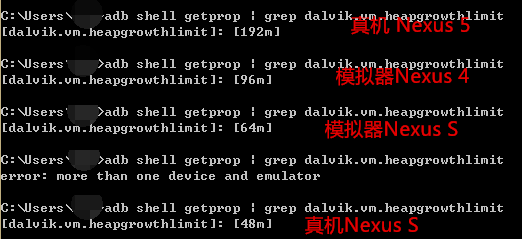

一、本节引言：
上节，我们已经学习了Bitmap的基本用法，而本节我们要来探讨的Bitmap的OOM问题， 大家在实际开发中可能遇到过，或者没遇到过因为Bitmap引起的OOM问题，本节我们 就来围绕这个话题来进行学习~了解什么是OOM，为什么会引起OOM，改善因Bitmap引起的 OOM问题~
二、什么是OOM？为什么会引起OOM？
答：Out Of Memory(内存溢出)，我们都知道Android系统会为每个APP分配一个独立的工作空间， 或者说分配一个单独的Dalvik虚拟机，这样每个APP都可以独立运行而不相互影响！而Android对于每个 Dalvik虚拟机都会有一个最大内存限制，如果当前占用的内存加上我们申请的内存资源超过了这个限制 ，系统就会抛出OOM错误！另外，这里别和RAM混淆了，即时当前RAM中剩余的内存有1G多，但是OOM还是会发生！别把RAM(物理内存)和OOM扯到一起！另外RAM不足的话，就是杀应用了，而不是仅仅是OOM了！ 而这个Dalvik中的最大内存标准，不同的机型是不一样的，可以调用：
ActivityManager activityManager = (ActivityManager)context.getSystemService(Context.ACTIVITY_SERVICE);
Log.e("HEHE","最大内存：" + activityManager.getMemoryClass());
获得正常的最大内存标准，又或者直接在命令行键入：
adb shell getprop | grep dalvik.vm.heapgrowthlimit
你也可以打开系统源码/system/build.prop文件，看下文件中这一部分的信息得出：
dalvik.vm.heapstartsize=8m
dalvik.vm.heapgrowthlimit=192m
dalvik.vm.heapsize=512m
dalvik.vm.heaptargetutilization=0.75
dalvik.vm.heapminfree=2m
dalvik.vm.heapmaxfree=8m
我们关注的地方有三个：heapstartsize堆内存的初始大小，heapgrowthlimit标准的应用的最大堆 内存大小，heapsize则是设置了使用android:largeHeap的应用的最大堆内存大小！
我这里试了下手头几个机型的正常最大内存分配标准：

你也可以试试自己手头的机子~
好啦，不扯了，关于OOM问题的产生，就扯到这里，再扯就到内存管理那一块了，可是个大块头， 现在还啃不动...下面我们来看下避免Bitmap OOM的一些技巧吧！
三、避免Bitmap引起的OOM技巧小结
1）采用低内存占用量的编码方式
上一节说了BitmapFactory.Options这个类，我们可以设置下其中的inPreferredConfig属性， 默认是Bitmap.Config.ARGB_8888，我们可以修改成Bitmap.Config.ARGB_4444 Bitmap.Config ARGB_4444：每个像素占四位，即A=4，R=4，G=4，B=4，那么一个像素点占4+4+4+4=16位 Bitmap.Config ARGB_8888：每个像素占八位，即A=8，R=8，G=8，B=8，那么一个像素点占8+8+8+8=32位 默认使用ARGB_8888，即一个像素占4个字节！
2）图片压缩
同样是BitmapFactory.Options，我们通过inSampleSize设置缩放倍数，比如写2，即长宽变为原来的1/2，图片就是原来的1/4，如果不进行缩放的话设置为1即可！但是不能一味的压缩，毕竟这个值太小 的话，图片会很模糊，而且要避免图片的拉伸变形，所以需要我们在程序中动态的计算，这个 inSampleSize的合适值，而Options中又有这样一个方法：inJustDecodeBounds，将该参数设置为 true后，decodeFiel并不会分配内存空间，但是可以计算出原始图片的长宽，调用 options.outWidth/outHeight获取出图片的宽高，然后通过一定的算法，即可得到适合的 inSampleSize，这里感谢街神提供的代码——摘自鸿洋blog！
public static int caculateInSampleSize(BitmapFactory.Options options, int reqWidth, int reqHeight) {
int width = options.outWidth;
int height = options.outHeight;
int inSampleSize = 1;
if (width > reqWidth || height > reqHeight) {
int widthRadio = Math.round(width * 1.0f / reqWidth);
int heightRadio = Math.round(height * 1.0f / reqHeight);
inSampleSize = Math.max(widthRadio, heightRadio);
}
return inSampleSize;
}
然后使用下上述的方法即可：
BitmapFactory.Options options = new BitmapFactory.Options();
options.inJustDecodeBounds = true; // 设置了此属性一定要记得将值设置为false
Bitmap bitmap = null;
bitmap = BitmapFactory.decodeFile(url, options);
options.inSampleSize = computeSampleSize(options,128,128);
options.inPreferredConfig = Bitmap.Config.ARGB_4444;
/* 下面两个字段需要组合使用 */
options.inPurgeable = true;
options.inInputShareable = true;
options.inJustDecodeBounds = false;
try {
bitmap = BitmapFactory.decodeFile(url, options);
} catch (OutOfMemoryError e) {
Log.e(TAG, "OutOfMemoryError");
}
四、及时回收图像
如果引用了大量的Bitmap对象，而应用又不需要同时显示所有图片。可以将暂时不用到的Bitmap对象 及时回收掉。对于一些明确知道图片使用情况的场景可以主动recycle回收，比如引导页的图片，使用 完就recycle，帧动画，加载一张，画一张，释放一张！使用时加载，不显示时直接置null或recycle！ 比如：imageView.setImageResource(0); 不过某些情况下会出现特定图片反复加载，释放，再加载等，低效率的事情...
五、其他方法
下面这些方法，我并没有用过，大家可以自行查阅相关资料：
1.简单通过SoftReference引用方式管理图片资源
建个SoftReference的hashmap 使用图片时先查询这个hashmap是否有softreference， softreference里的图片是否为空， 如果为空就加载图片到softreference并加入hashmap。 无需再代码里显式的处理图片的回收与释放，gc会自动处理资源的释放。 这种方式处理起来简单实用，能一定程度上避免前一种方法反复加载释放的低效率。但还不够优化。
示例代码：
private Map<String, SoftReference<Bitmap>> imageMap
= new HashMap<String, SoftReference<Bitmap>>();
public Bitmap loadBitmap(final String imageUrl,final ImageCallBack imageCallBack) {
SoftReference<Bitmap> reference = imageMap.get(imageUrl);
if(reference != null) {
if(reference.get() != null) {
return reference.get();
}
}
final Handler handler = new Handler() {
public void handleMessage(final android.os.Message msg) {
//加入到缓存中
Bitmap bitmap = (Bitmap)msg.obj;
imageMap.put(imageUrl, new SoftReference<Bitmap>(bitmap));
if(imageCallBack != null) {
imageCallBack.getBitmap(bitmap);
}
}
};
new Thread(){
public void run() {
Message message = handler.obtainMessage();
message.obj = downloadBitmap(imageUrl);
handler.sendMessage(message);
}
}.start();
return null ;
}
// 从网上下载图片
private Bitmap downloadBitmap (String imageUrl) {
Bitmap bitmap = null;
try {
bitmap = BitmapFactory.decodeStream(new URL(imageUrl).openStream());
return bitmap ;
} catch (Exception e) {
e.printStackTrace();
return null;
}
}
public interface ImageCallBack{
void getBitmap(Bitmap bitmap);
}
2.LruCache + sd的缓存方式
Android 3.1版本起，官方还提供了LruCache来进行cache处理，当存储Image的大小大于LruCache 设定的值，那么近期使用次数最少的图片就会被回收掉，系统会自动释放内存！
使用示例：
步骤：
1）要先设置缓存图片的内存大小，我这里设置为手机内存的1/8, 手机内存的获取方式：int MAXMEMONRY = (int) (Runtime.getRuntime() .maxMemory() / 1024);
2）LruCache里面的键值对分别是URL和对应的图片
3）重写了一个叫做sizeOf的方法，返回的是图片数量。
private LruCache<String, Bitmap> mMemoryCache;
private LruCacheUtils() {
if (mMemoryCache == null)
mMemoryCache = new LruCache<String, Bitmap>(
MAXMEMONRY / 8) {
@Override
protected int sizeOf(String key, Bitmap bitmap) {
// 重写此方法来衡量每张图片的大小，默认返回图片数量。
return bitmap.getRowBytes() * bitmap.getHeight() / 1024;
}
@Override
protected void entryRemoved(boolean evicted, String key,
Bitmap oldValue, Bitmap newValue) {
Log.v("tag", "hard cache is full , push to soft cache");
}
};
}
4）下面的方法分别是清空缓存、添加图片到缓存、从缓存中取得图片、从缓存中移除。
移除和清除缓存是必须要做的事，因为图片缓存处理不当就会报内存溢出，所以一定要引起注意。
public void clearCache() {
if (mMemoryCache != null) {
if (mMemoryCache.size() > 0) {
Log.d("CacheUtils",
"mMemoryCache.size() " + mMemoryCache.size());
mMemoryCache.evictAll();
Log.d("CacheUtils", "mMemoryCache.size()" + mMemoryCache.size());
}
mMemoryCache = null;
}
}
public synchronized void addBitmapToMemoryCache(String key, Bitmap bitmap) {
if (mMemoryCache.get(key) == null) {
if (key != null && bitmap != null)
mMemoryCache.put(key, bitmap);
} else
Log.w(TAG, "the res is aready exits");
}
public synchronized Bitmap getBitmapFromMemCache(String key) {
Bitmap bm = mMemoryCache.get(key);
if (key != null) {
return bm;
}
return null;
}
/**
* 移除缓存
*
* @param key
*/
public synchronized void removeImageCache(String key) {
if (key != null) {
if (mMemoryCache != null) {
Bitmap bm = mMemoryCache.remove(key);
if (bm != null)
bm.recycle();
}
}
}
上述内容摘自——图片缓存之内存缓存技术LruCache,软引用
六、本节小结：
本节给大家讲解了OOM问题的发生缘由，也总结了一下网上给出的一些避免因Bitmap而引起OOM 的一些方案，因为公司做的APP都是地图类的，很少涉及到图片，所以笔者并没有遇到过OOM的问题， 所以对此并不怎么熟悉~后续在进阶课程的内存管理，我们再慢慢纠结这个OOM的问题，好的， 本节就到这里，谢谢~
参考文献： Android应用中OOM问题剖析和解决方案